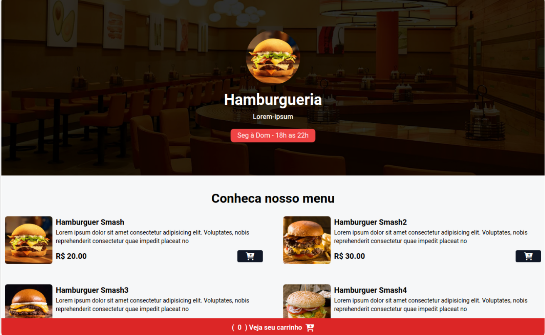
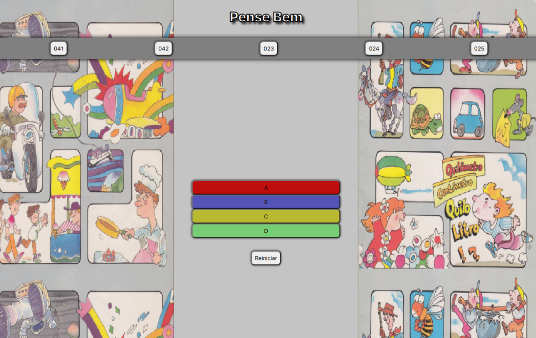

Desenvolvedor
Front - End
Olá! Meu nome é Vitor Diniz, tenho 22 anos e sou desenvolvedor front-end. Possuo conhecimento em linguagens como JavaScript, HTML,C e CSS. Estou em busca de um estágio onde eu possa colaborar em um ambiente de trabalho, aplicando meus conhecimentos em favor da organização à qual desejo integrar. Meu objetivo é contribuir para o benefício e o crescimento da empresa, enquanto também busco meu próprio crescimento profissional.
Projetos
Cardápio
(link do site)O site oferece um cardápio de hambúrgueres para uma empresa, onde um cliente pode fazer um pedido. Ao realizar os cadastros corretos, o pedido será entregue em sua casa. Linguagens utilizadas: JavaScript, TailwindCSS e HTML
Pense Bem
(link do site)O site oferece um jogo antigo chamado "Pense Bem", no qual você pode jogá-lo virtualmente. Nele, você terá a pergunta do livro 041 e, ao selecionar a opção correta, terá acesso ao gabarito. Linguagens usadas: JavaScript, HTML, CSS.
Sobre mim
Olá, meu nome é Vitor Diniz, tenho 22 anos. Atualmente, estou cursando faculdade no Centro Universitário Unilasalle, em Niterói. Encontro-me no terceiro período, no qual estudo diversos conteúdos de programação e aprendo a trabalhar em equipes e projetos para aprimorar meu conhecimento na área. Possuo familiaridade com linguagens como JavaScript, HTML, CSS, C, SQL e Excel.
Neste período, estou dedicando-me ao estudo de Java e Python.
Concluí o terceiro ano do ensino médio aos 18 anos no Colégio e Curso Pensi, em Icaraí. Após a conclusão, ingressei em um curso preparatório para a Academia Militar das Agulhas Negras, focando na turma da EsPCEx. No último ano do concurso da EsPCEx, fui aprovado, porém não fui chamado para ingressar.
A partir desse momento, decidi iniciar um curso de programação, no qual me interessei bastante, e logo em seguida iniciei a faculdade. Estou muito satisfeito com minha trajetória e motivado a aprender cada vez mais.
Voltar para o início da página